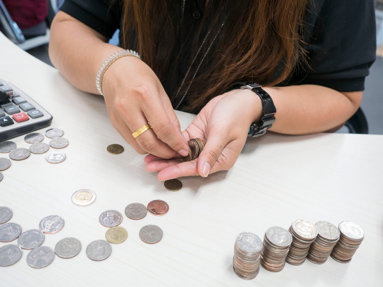
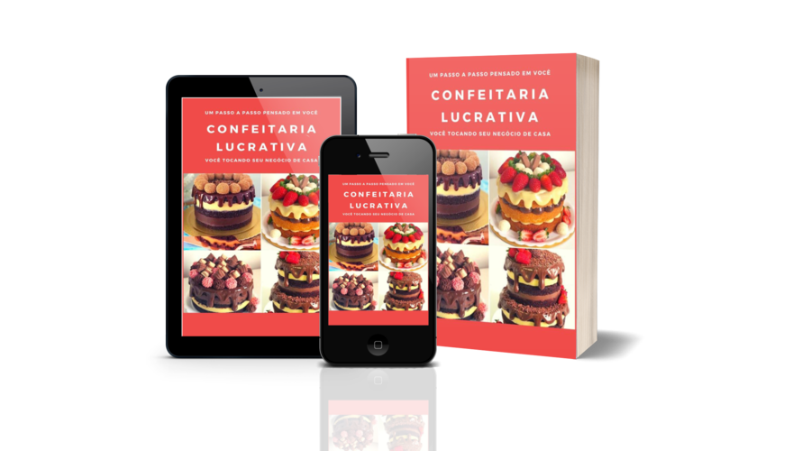
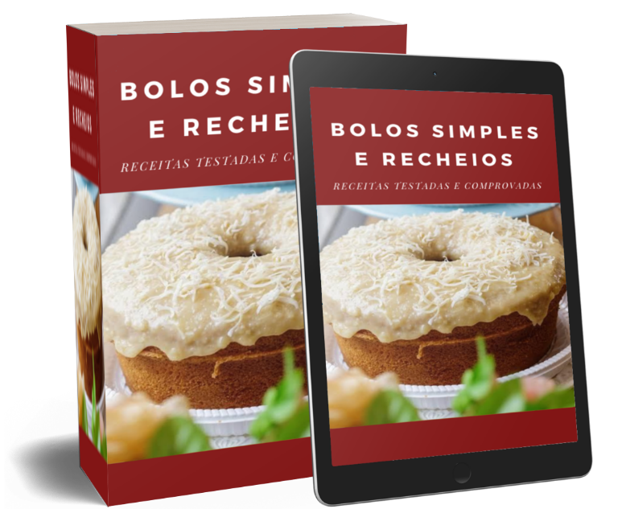

O erro invisível que tem sabotado milhares de mulheres, é achar que para começar seu próprio negócio na confeitaria é necessário um "grande investimento", e isso não é verdade. Muitos não sabem, mas 80% das grandes confeiteiras começaram trabalhando em suas casas, não tinham muita experiência, e de encomenda em encomenda se tornaram grandes!
Agora, você precisa ler esse artigo até o fim, porque descobrirá hoje como ter seu próprio negócio na confeitaria.
Nos últimos anos, pesquisas significativas têm mostrado que o número de mulheres que abriram seu próprio negócio no ramo da confeitaria tem crescido surpreendentemente! Veja alguns casos:
Notícias Impactantes sobre o ramo da confeitaria.
O Método Confeitaria Lucrativa NÃO É apenas um curso de receitas de bolos e coberturas.
É o único pensado e criado EXCLUSIVAMENTE para a mulher COMUM.
Estude sem sair de casa, método 100% online! VOCÊ é quem decide os horários de acordo com a sua disponibilidade!!
Não necessita experiência! Mesmo que você nunca tenha acertado nem mesmo um bolo de caixinha!
Receitas testadas! Receitas incríveis e deliciosas, todas testadas e comprovadas!!
Aprenda como divulgar seu negócio!! Aprenda como além de conseguir clientes, fidelizar eles de forma inteligente e precisa!
Guia da iniciante! Quais materiais e utensílios você vai precisar sem exageros e gastos desnecessários!
Bônus imperdíveis!! Além de todo um método passo a passo, nós da equipe Confeitaria Lucrativa preparamos 2 SUPER BÔNUS para você, e uma surpresa de acelerar o coração!!
E todas essas transformações agora estão acessíveis para você com o Método Confeitaria Lucrativa
Um método completo, desenvolvido para mulheres comuns poderem trabalhar com eficiência e segurança na confeitaria. Tendo em suas mãos o controle de sua vida e finanças.
Prepare-se para uma nova fase em sua vida!
Em poucas semanas, você vai poder ter uma renda semanal dos seus bolos maior do que a que você ganha hoje por mês, e com a segurança de um funcionário público.
Equipe Confeitaria Lucrativa, formada por instrutores americanos.
E foi pensando em todas as mulheres que querem ter liberdade de tempo e dinheiro que nós desenvolvemos o método Confeitaria Lucrativa, um programa 100% online com tudo o que você precisa para trabalhar com eficiência e segurança na confeitaria. Com uma leitura leve e imagens de alta qualidade mostrando detalhadamente cada etapa, você vai poder no conforto de sua casa entender e aprender como lucrar com a confeitaria. Nós da Confeitaria Lucrativa estamos muito felizes por estar com você nessa luta por uma vida financeira mais tranquila e segura, a partir de agora temos certeza de que você vai muito além de ser dona do seu nariz, seu dinheiro e tempo, mas também descobrir uma nova forma de viver, com ainda mais energia e alegria.
Tenha Hoje o Seu Livro Digital Confeitaria Lucrativa, e dê o primeiro passo para descobrir a metodologia comprovada que irá te ensinar lucrar surpreendentemente com a confeitaria!
O que você vai receber adquirindo o livro digital Confeitaria Lucrativa
Receba imediatamente e baixe agora mesmo no seu computador ou celular
O que você vai aprender exatamente:
- Os segredos de como iniciar e manter seu negócio.
- Como e onde divulgar seu trabalho.
- Como atender a todo tipo de clientela, desde aniversários mais simples, até casamentossofisticados.
- Como atrair clientes e os fidelizar.
E mais! O método Confeitaria Lucrativa é para Você!!
Um cronograma completo e o passo a passo desde o zero, para você ir desde a inexperiência até começar e conquistar uma nova vida com liberdade de tempo e dinheiro!
- Você vai aprender como e quando abrir seu MEI, e as vantagens que isso te proporciona como profissional.
- Aprenda a fazer bolo em camadas e bolo em andares. Que são muito requisitados em casamentos sofisticados.
- Aprenda como ter sua loja virtual em plataformas delivery.
- Aprenda os segredos das coberturas de bolo mais usadas no mundo da confeitaria.
TEM MAIS... QUERO TORNAR SUA DECISÃO AINDA MAIS FÁCIL!
Preparamos 2 SUPER BÔNUS EXCLUSIVOS para tornar sua experiência e aprendizado ainda melhores!!
R$100
(de graça para você)
Os Segredos da Cobertura Perfeita
Um ebook completo com muitas receitas e técnicas das coberturas mais utilizadas no mundo da confeitaria, como glacê real, pasta americana, ganache, chantininho e muito mais. Técnicas dos bolos sensação do momento como “bolo ondulado” também conhecido como “bolo wave”, bolo espelhado, bolo em degradê, bolo metalizado, bolo tsunami e muito mais!! Técnicas de manipulação de cada ingrediente e congelamento do bolo. Também contém técnicas de como confeccionar rosas de chantilly pasta americana, e muito mais!!

R$120
(de graça para você)
Bolos Simples e Recheios
Um ebook completo e repleto de receitas incríveis! Receitas de massas como pão de ló profissional, pão de ló de chocolate, e o bolo sensação do momento “red velvet” também conhecido como bolo vermelho, bolo simples da vovó, recheios deliciosos que se vendem sozinhos. Técnicas para seu bolo não murchar ou passar do ponto, instruções preciosas e únicas e muito mais!
Preparamos também um bônus surpresa inacreditável!! Porém APENAS quem decidir passar a vender bolos TODOS OS DIAS, e der o primeiro passo para isso, fazendo parte do nosso time, irá ter acesso!!!
Apenas pense por um segundo... onde você estaria se tivesse o apoio dessa metodologia para alcançar seu próprio negócio de confeitaria?
Isso salvaria sua sanidade? Te traria alegria e confiança?
Ou até mesmo melhoraria seu relacionamento com seus familiares e amigos?
Este é realmente um transformador de vida!
Este é um programa exclusivo
Lembre-se: As técnicas e receitas de ponta, e o método dentro do programa Confeitaria Lucrativa são tão eficientes e poderosos, que podem literalmente te ajudar a sair do absoluto zero para um negócio próspero e lucrativo na confeitaria. Independentemente de suas experiências anteriores, ou mesmo que não tenha tido nenhuma experiencia ainda.
Você não irá encontrar essas informações on-line ou off-line em lugar algum.
Este é um sistema exclusivo que irá desbloquear todo o potencial oculto que você tem, te ajudará a criar estratégias com clareza, e irá ajudar a incrível mulher de negócios que existe aí dentro florescer!
Porque você precisa agir agora...
Você não ficará perdida em um mar de receitas incertas, pois terá só o melhor do melhor selecionado a dedo para você.
Você nunca ficará presa na barreira que mata a grande maioria dos negócios, que é: “o que eu faço agora?”, “Qual o próximo passo que devo dar?” pois terá acesso a um passo a passo comprovado.
Por essa razão... Temos total certeza de que o valor agregado em todo o conhecimento que lhe entregaremos, é bem maior do que o investimento necessário para ter acesso a toda essa FANTÁSTICA METODOLOGIA!
Então é nosso dever avisar que muito em breve será feito um reajuste no preço deste curso!
Se você está vendo isso agora, ainda há tempo de acessar o curso com o preço atual, no entanto se você não tomar medidas agora, possivelmente quando abrirmos vaga novamente o curso já estará com o valor reajustado! Não há dúvidas sobre isso.
Então você precisa agir agora para acessar esse sistema imediatamente
Agora, a pergunta mais importante:
O método Confeitaria Lucrativa é para você?
- Se você quer um passo a passo comprovado e que funciona
- Se você quer formar uma clientela fiel
- Se você é iniciante, mas quer começar com 100% de segurança
- Se você quer ter o domínio de seu tempo e dinheiro, de sua vida...
SIM, O Método Confeitaria Lucrativa É PARA VOCÊ
Sabe o melhor disso tudo?
“E se eu achar que não funciona para mim?”
Tudo bem. Você pode tomar sua decisão agora, com a garantia de total reembolso em caso de insatisfação.
Seu investimento está 100% coberto pela nossa GARANTIA de satisfação.
É isso mesmo que você leu!
Nós queremos tornar a decisão realmente mais fácil para você. Por isso você tem 7 dias para experimentar o curso com risco 0. Se no prazo de 7 dias corridos a partir da sua inscrição, você optar por não querer seguir com o curso, não terá que pagar pelo conteúdo já acessado. Basta solicitar o reembolso no prazo, e receber 100% do valor investido no curso de volta.
Vale lembrar que não estamos aqui para fazer promessas vazias, ou que não possamos cumprir.
E por que fazemos isso?
Temos prazer em ver mulheres comuns, em situações financeiras muitas vezes complicada, se tornarem mulheres de sucesso, realizadas, transbordando satisfação e alegria. Com o controle de suas vidas em mãos.
Se você se comprometer conosco em estudar e aplicar todo o método, há grandes chances de você recuperar o valor que investiu antes mesmo da fatura do cartão chegar. Você realmente não tem nada a perder.
Imagine sua nova vida com liberdade e autonomia...
Imagine como pode ser sua vida em algumas semanas tendo seu negócio próprio.
Não ter que passar mais por dificuldades financeiras, não sentir mais tristeza e nem frustração por não ter uma saída.
Você finalmente pode comprar aquele sapato que viu e gostou, sem ter medo de faltar dinheiro para pagar alguma conta, sem culpa!
Pode dar um aniversário legal para seus filhos(as). Ou até mesmo comprar aquele brinquedo que ele(a) já vem te pedindo a tempos...
Fazer aquela viagem dos sonhos, enfim, realizar seus sonhos.
Lembre-se: esse é um passo isento de riscos!
Você não tem absolutamente nada a perder
E agora que você já tem o conhecimento sobre este novo mundo que está totalmente a seu alcance.
Você tem 3 opções:Não fazer nada, e continuar fechando o mês no vermelho, dizendo não aos seus sonhos e potencial.
Você pode tentar se aventurar sozinha nesse mar de receitas incertas, sem um mapa para te guiar sobre o que e quando fazer algo. Tentar fazer do seu jeito e possivelmente se frustrar.
Ou você pode entrar agora para o nosso time, e seguir toda metodologia comprovada que irá te ajudar a alcançar suas realizações e sonhos, trazendo assim uma nova vida cheia de entusiasmo e alegria.